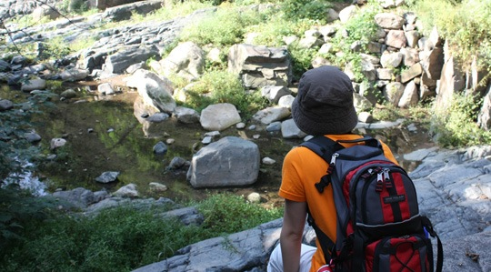

趁年轻多爬几座山，不然以后老了就爬不动了。上次爬完峨嵋，还是挺满足于那艰辛的过程，回味无穷。当自己一步步爬到顶端，回头一览众山小的时候，我深信心中的舒畅应该是那些坐索道缆车上来的人所不能比的。
泰山从正门常规路线上山，风光一般，更多的是道路两旁文人墨客，皇帝太监们提的碑文。倒是第二天看完日出从后石坞下山，四下无人，偶尔的几声鸟叫，更突显这份安静，途经松涛，峭壁，石海，和零星的小瀑布，颇有几分行走在天地间的感觉。反正在国内，大凡人多的地方，都不会有多好的感觉。天很蓝，山很绿，空气是北京所没有的清新，一边走着，一边想自己什么时候才能背上背包，辞职去做一个真正的行者，那才是真正想要的生活吧。
大家公认：小时候总觉得时间过得很慢，长大了就觉得时间过得飞快。途经山腰的一些小房子的时候，我想如果我们在这长住下了，也许时间就会一下慢下来了。所谓的时间速度，和年龄无关，只和心态有关。因此有时间，还是要多出去走走。下山的时候，路边小房子里的大叔听着某山寨电台的广播，刚好放了一首BEYOND的过时老歌，在那个环境下，却也嘹亮了这座山头，别有一番感触。
泰安市容很差，如果你不是晚上到的泰安，那你很容易就会发现这一点。在泰安火车站的广场上，立着一个大雷锋像，在远处绿色群山的衬托上非常显眼，这让我们一下脑海里拼命搜索以前的记忆，雷锋是泰安人？几经考究下才确定不是，不过在泰山接触的这些小商小贩，还有泰安人，真的是颇有几分雷锋的影子，这是至今我在旅游区遇过的最好的人了，也许是我去的地方还不够多。 纯徒步爬山还是挺累的，像晓禾就到现在腿还没完全缓过来。不过“五岳归来不看山，黄山归来不看岳”，下一站——黄山。 趁年轻！